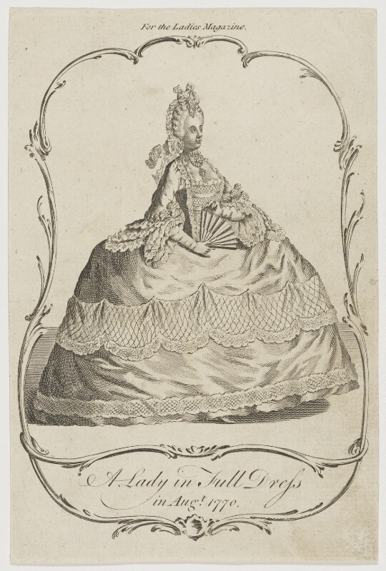
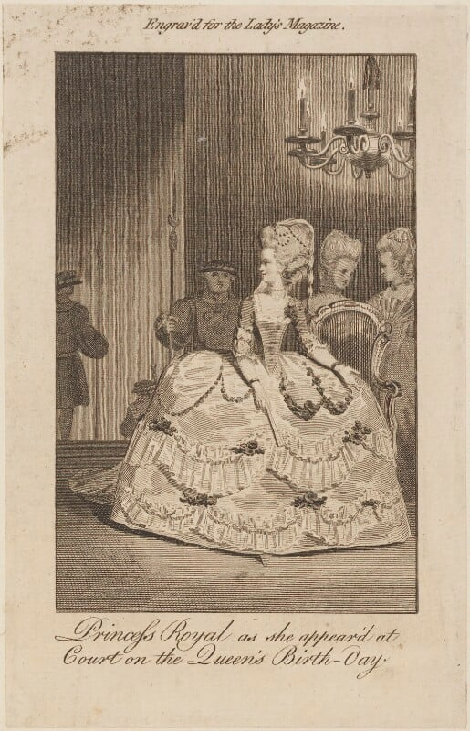
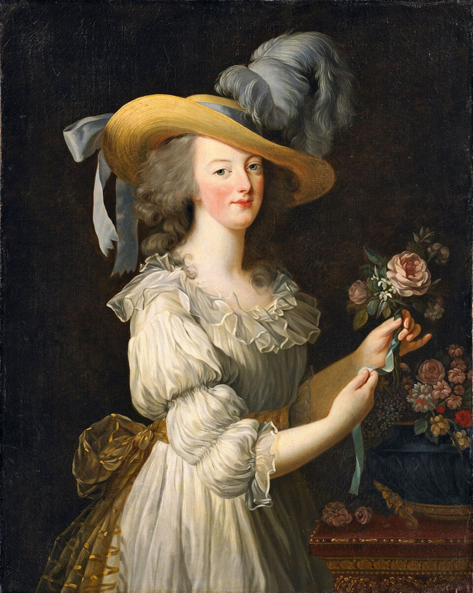
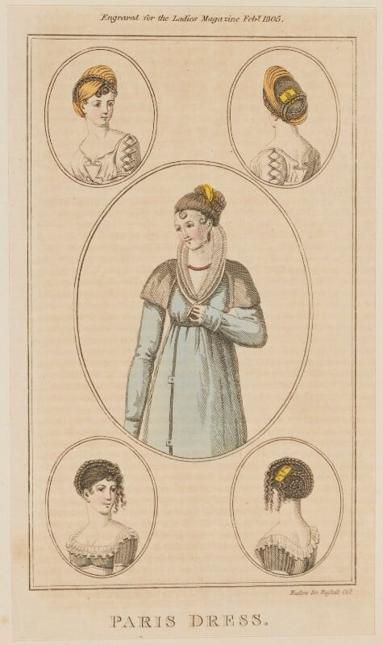
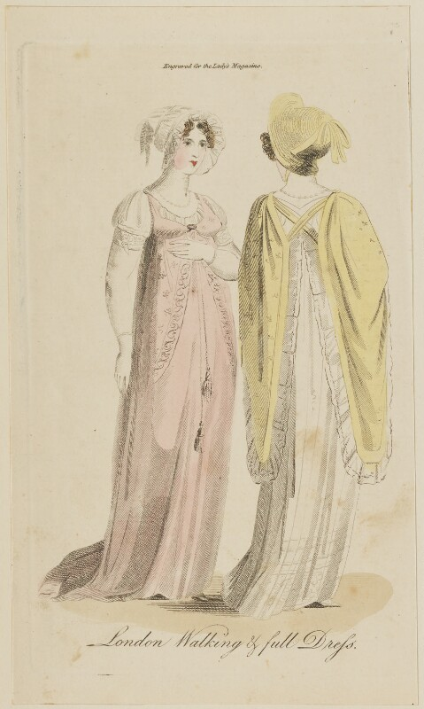
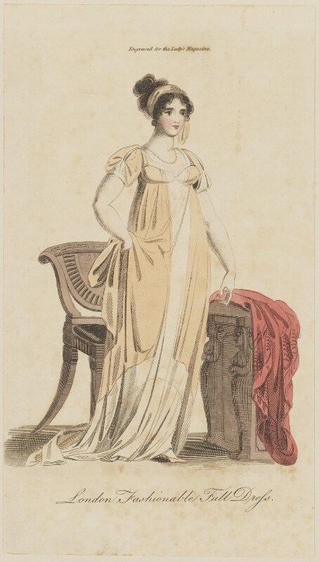

Antes de la fotografía: la imagen de moda
Siglos XVIII–XIX
La moda comenzó a construir deseo mucho antes de la aparición de la fotografía.
Puntos clave
- Las ilustraciones se consolidaron como principal medio de difusión de tendencias.
- La imagen empezó a transmitir ideales de elegancia, estatus y prestigio social.
- Surgieron las primeras publicaciones especializadas en moda.
- París se convirtió en el principal centro de influencia estética de Europa.
- Aparecieron las primeras estrategias de construcción de imagen asociadas a figuras públicas.
Referentes
- Rose Bertin: considerada la primera gran modista de la historia, comprendió el poder de la imagen para construir una identidad visual reconocible alrededor de María Antonieta.
- The Lady's Magazine y Le Cabinet des Modes: estas publicaciones sentaron algunas de las bases de las revistas de moda contemporáneas.
Galería





